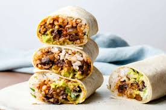

Veggie Bean Wrap
Home

Description
A quick and satisfying dish with tender chicken and garlic in a creamy sauce, mixed with your favorite pasta.
Ready in 20 minutes!
Ingredients
- 1 large tortilla (or 2 small)
- ½ cup cooked black or kidney beans
- 1 tbsp crème fraîche or hummus
- Salt and pepper
- Lemon or lime juice
- Optional veggies: lettuce, tomato, corn, red onion
Instructions
- Lightly mash the beans with a fork.
- Mix with crème fraîche or hummus and season to taste.
- Fill the tortilla with the bean mix and veggies.
- Roll it up and serve, or take it with you.